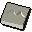

Unholy mould

| Config name | unholy_symbol_mould |
| Item id | 1594 |
| Value | 200 gp |
| Weight | 1lb |
| Members | Yes |
| Tradeable | No |
| Stackable | No |
| Defined in | scripts/skill_crafting/configs/jewellery/moulds.obj |
Unholy mould
Used to make unholy symbols.
Dropped by
| NPC | Level | Quantity | Rarity | Via | Notes |
|---|---|---|---|---|---|
| 13 | 1 | 1/128 (0.78%) | if %itgronigen >= ^itgronigen_complete |
Quests
Referenced in scripts
scripts/drop tables/scripts/chaos_druid.rs2scripts/quests/quest_itgronigen/scripts/spirit_of_scorpius.rs2scripts/skill_crafting/scripts/jewellery/jewellery.rs2